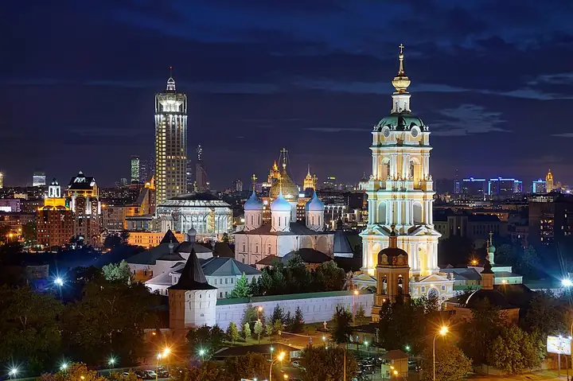

Фото: Святослав, CC BY-SA 3.0 · Wikimedia Commons
Монастырь · ЦАО
Новоспасский монастырь
Монастырь на холме у Крестьянской заставы с прудом и высокой колокольней.
- ₽ · до 1 500 ₽ на человека
Позвать сюда: Новоспасский монастырьОткрыть в каталоге: Новоспасский монастырьМаршрут до места: Новоспасский монастырь
Адрес и детали
- Адрес
- Крестьянская пл., 10
Открыть на Яндекс Картах (в новой вкладке) - Метро
- м. Пролетарская
- Округ
- Центр (ЦАО)
- Цена
- до 1 500 ₽ на человека
- Проверено
- работает — проверили в октябре 2026
Похожие рядом


Что ещё рядом

Как позвать
- Выбери план, место или событие — в карточке адрес, цены и маршрут в Яндекс Картах.
- Нажми «Позвать сюда» — соберётся приглашение-игра для свидания или голосование для компании.
- Отправь ссылку в любой мессенджер: тебе ответят, а компания отметит, куда и когда может. Бесплатно и без регистрации.